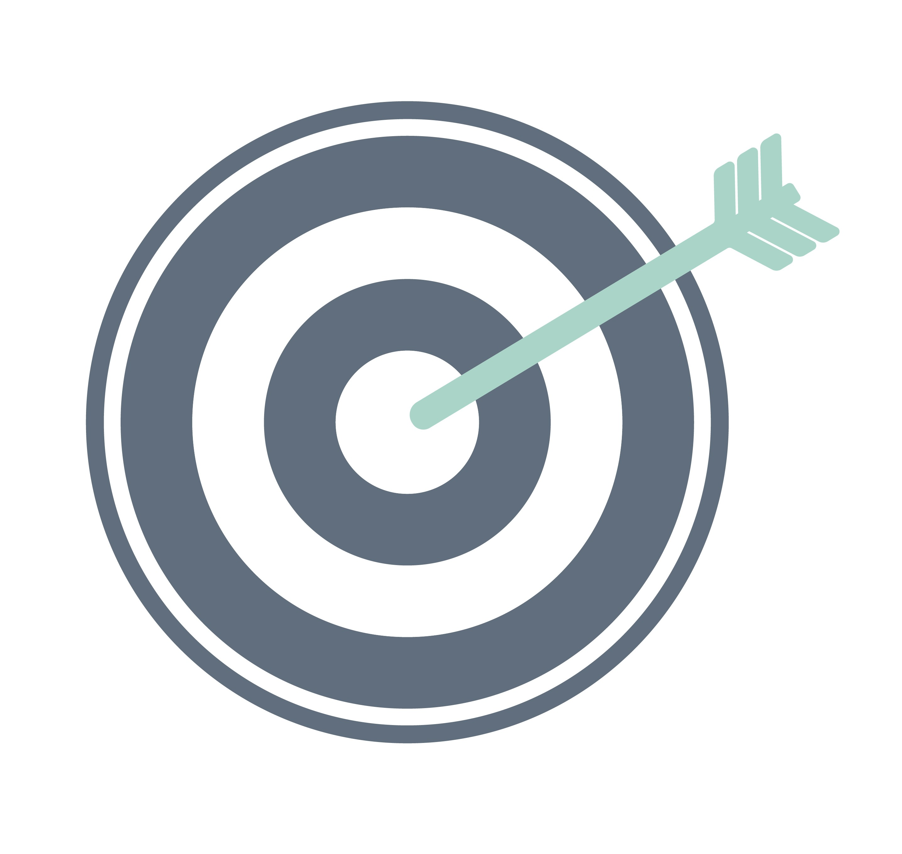
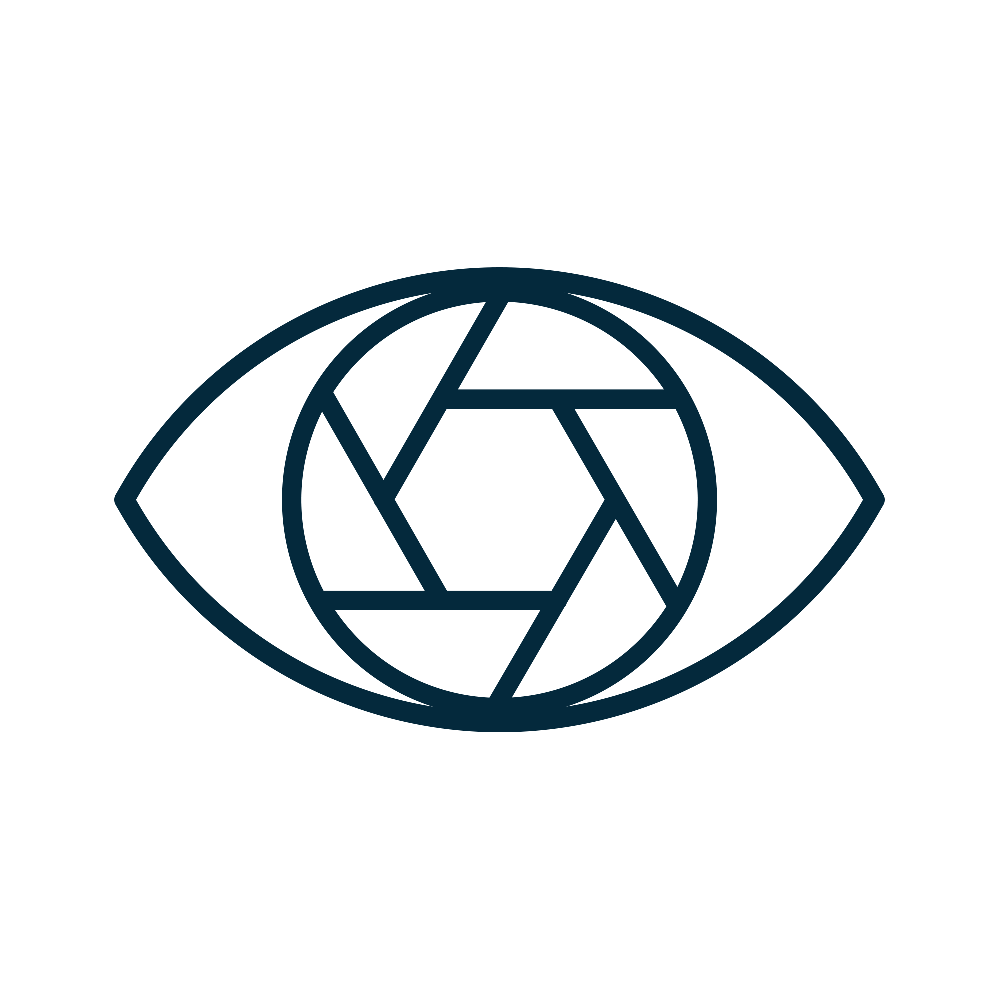

MISIÓN
TheraLives tiene como objetivo entregar al público una plataforma donde aquellas personas que tengan dificultades tanto físicas como de lenguaje puedan acceder a materiales visuales de apoyo. A través de ellos mismos como usuarios que por medio de perfiles podrán compartir sus terapias y observar videos de otros usuarios que los ayude a recuperarse. La idea es que aquellos que no cuenten con los recursos o se encuentren lejos de centros rehabilitadores puedan comenzar a hacerlo desde casa gracias al avance tecnológico

VISIÓN
Ser la primera plataforma a nivel nacional en posicionarse como una alternativa que rompe las barreras de las adversidades logrando conectar a las personas que tienen el único propósito de mejorar su salud desde la comodidad de su hogar. Además de aspirar ser acogidos rápidamente por los usuarios para formar una comunidad que vele por la recuperación y el bienestar de los demás.
PROPÓSITO
El proposito de TheraLives es proporcionar una herramienta que mejore la calidad de vida de los usuarios, ofreciendo alternativas a las terapias fisicas convencionales, sin que estos tegan que generar gastos execivos.